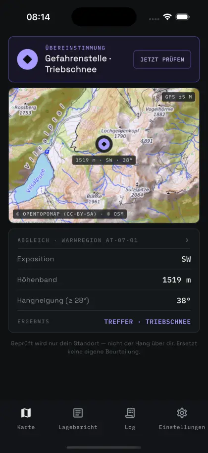
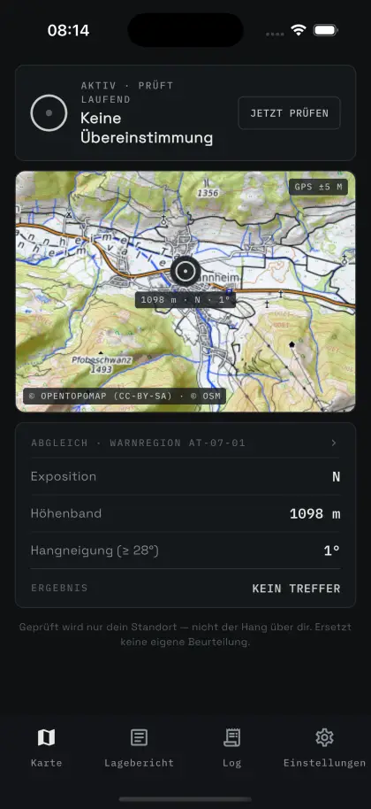
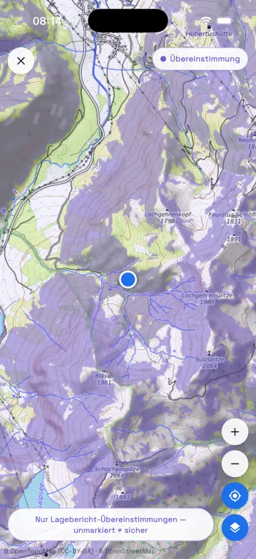
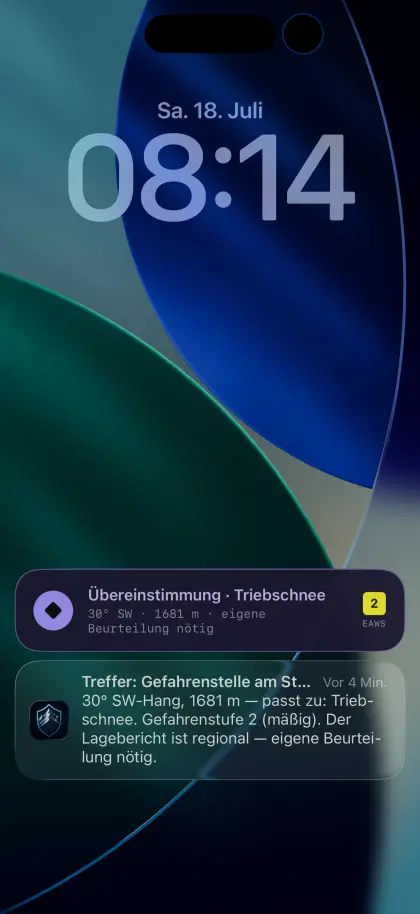

Presse-Kit
Material für Redaktionen: Kurzbeschreibung, Fakten, Zahlen der Validierung, Bilder zum Download und Kontakt. Alles auf dieser Seite darf mit Quellenangabe verwendet werden.
HangKontext ist ein standortbezogener Entscheidungsassistent für Skitouren und Freeriding. Die App bestimmt im Hintergrund das Gelände am Standort — Exposition, Höhe und Hangneigung — und gleicht es laufend mit den Gefahrenstellen des amtlichen Lawinenlageberichts ab. Stimmen alle drei Merkmale mit derselben Gefahrenstelle überein, meldet die App diese Übereinstimmung; sie bewertet den Hang nicht und gibt ihn nicht frei.
Das Projekt entsteht privat, ohne Auftraggeber und ohne Werbung. Die Beta ist kostenlos; nach der Erprobungsphase soll ein Saison-Abo in der Größenordnung von 20 bis 30 Euro hinzukommen, wobei die Kernfunktion — der Abgleich in der eigenen Region — frei bleibt. Wer in der Beta-Saison 2026/27 dabei ist, behält den vollen Funktionsumfang dauerhaft kostenfrei.
Ob Exposition, Höhenband und Hangneigung an deinem Standort einer Gefahrenstelle des amtlichen Lageberichts entsprechen.
Keine Prognose, keine Gefahrenkartierung und keine Freigabe. Unmarkierte Flächen sind nicht automatisch sicher.
Zwei Grundsätze prägen die App und gelten auch für ihre Kommunikation:
Die Prüflogik wurde an 656 auswertbaren dokumentierten Lawinenereignissen in Tirol (ab November 2021) nachgerechnet:
Wichtig für die Einordnung: Beide Zahlen gehören zusammen. Ereignisorte stimmen mit 96,5 % häufiger mit einer Gefahrenstelle überein als zufällige Flächenpunkte derselben Warnregion (89,9 %). Dieser Abstand ist deskriptiv. Weil die Vergleichspunkte keine real begangenen Touren abbilden, ist er kein belastbares Produkt-Gütemaß. Die 89,9 % sind weder False-Positive-Rate noch Unfallwahrscheinlichkeit.
Die Auswertung prüft die Abdeckung der Kriterien des amtlichen Lageberichts im konkreten Gelände. Sie misst keine Unfallwahrscheinlichkeit und belegt keine Unfallvermeidung. Die vollständige Aufbereitung — Methode, Aufschlüsselung nach Gefahrenstufe, die Fälle ohne Übereinstimmung und die Grenzen der Datenbasis — steht auf einer eigenen Seite: 656 Lawinenereignisse nachgerechnet.
Datenbasis der Ereignisse: LAWIS, bereitgestellt vom Lawinenwarndienst des Landes Tirol unter CC BY.
Testzugang für Redaktionen: TestFlight-Beta öffnen. Hinweis für Tests außerhalb der Saison: Solange die Warndienste keinen Lagebericht veröffentlichen, hat die App nichts zum Abgleichen und zeigt durchgehend „Eingeschränkte Prüfung" — das ist der vorgesehene Zustand, kein Fehler.
Screenshots aus der App (1206 × 2622 px) und das App-Icon. Verwendung frei im redaktionellen Zusammenhang, bitte mit Quellenangabe „HangKontext". Bei Kartenausschnitten bitte zusätzlich „© OpenTopoMap (CC-BY-SA), © OpenStreetMap" nennen.

Übereinstimmung
Keine Übereinstimmung
Karte mit Overlay
SperrbildschirmHangKontext entsteht als privates Projekt von Dominik Allgeier, Softwareentwickler aus Bad Hindelang im Allgäu und selbst auf Skitour unterwegs. Die App ist aus einer wiederkehrenden Frage im Gelände entstanden: Der Lagebericht nennt Expositionen und Höhenbänder — aber steht man gerade in einem? Entwickelt wird ohne Investoren und ohne Auftraggeber; die App ist nicht werbefinanziert und verkauft keine Nutzerdaten. Nach der kostenlosen Beta ist ein Saison-Abo vorgesehen (siehe oben) — das Projekt soll sich langfristig selbst tragen.
Die Formulierungen der App sind bewusst zurückhaltend gewählt, weil eine falsche Zuschreibung im Lawinenkontext Menschen in Sicherheit wiegen kann. Deshalb die Bitte an Redaktionen, sie zu übernehmen:
Zutreffend: „gleicht das Gelände am Standort mit dem amtlichen Lagebericht ab", „meldet eine Übereinstimmung mit einer Gefahrenstelle", „informativ, nie als Freigabe".
Nicht zutreffend: „warnt vor Lawinen", „erkennt Lawinengefahr", „zeigt sichere Hänge", „Lawinen-Warn-App", „schützt vor Lawinen". HangKontext ersetzt weder Ausbildung noch Tourenplanung noch die eigene Beurteilung im Gelände.
Interviews (schriftlich oder als Audio), Rückfragen zur Methodik und weitere Bilder auf Anfrage: avalancheguard.app@gmail.com
Stand: Juli 2026 · Impressum & Datenschutz
{kind=link}
{kind=link}
{kind=link}
{kind=link}
{kind=link}